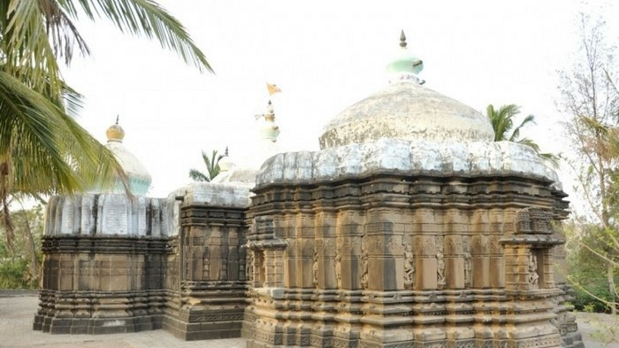
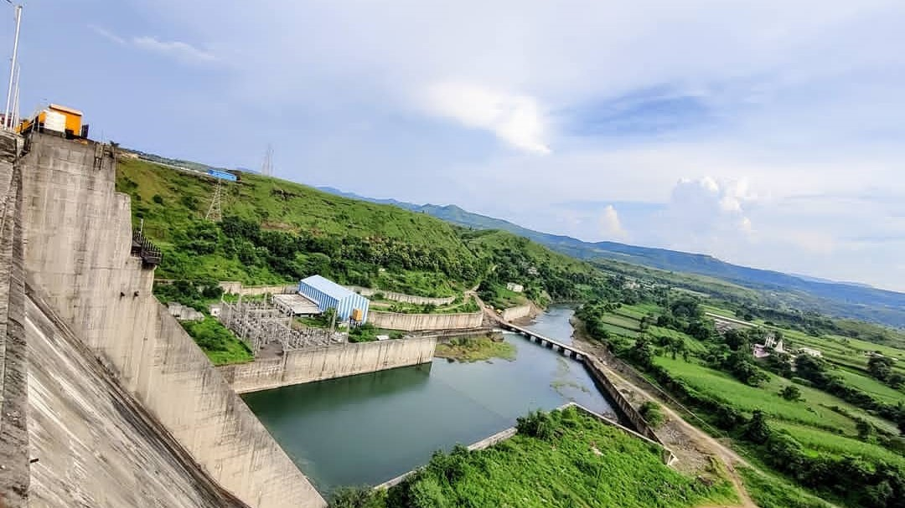

Home
About
Contact

Heritage Places
Hills Places
Waterfalls Places
Dams Places
Heritage Places
Akole Taluka has ancient history from thousands of years. Various
heritage places are located in Akole Taluka.
Hills
Sahyadri Mountains are all along the Akole Taluka from all directions.
here you will find multiple attractions
Waterfalls
Akole Taluka has ancient history from thousands of years. Various
Waterfalls are located in Akole Taluka.

Dams
Akole Taluka has various Water Dams for Water storage,
which supplies water to 3-4 districts.